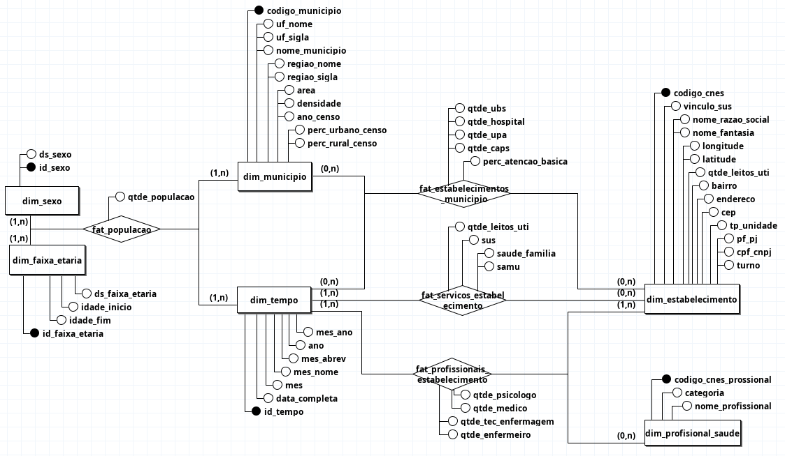
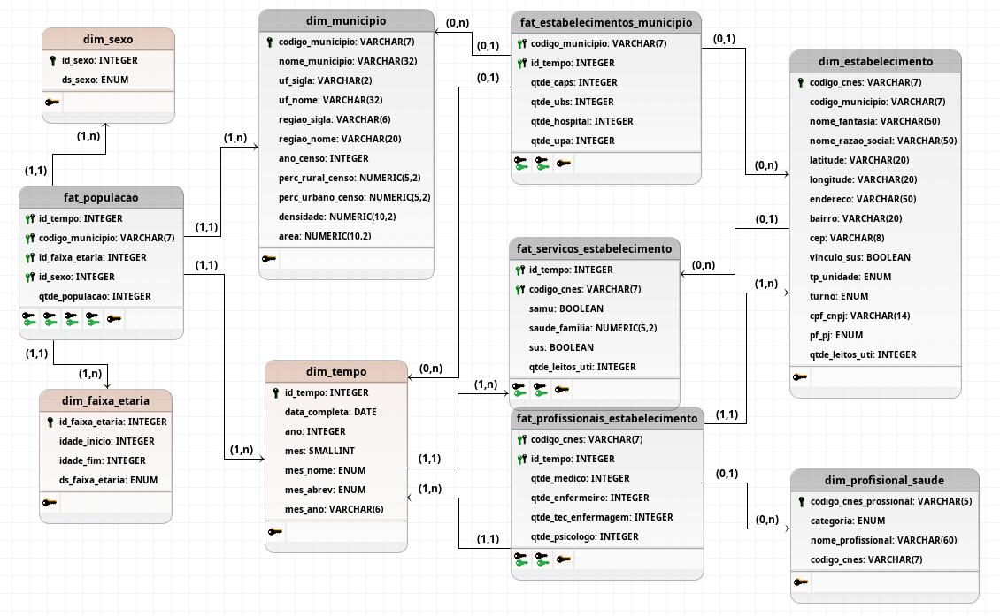

Modelagem dos Dados
Histórico de Versões
| Versão | Data | Descrição |
|---|---|---|
| 1.0 | 03/11/2025 | Criação inicial do documento. |
Este documento descreve a proposta de remodelagem da camada de armazenamento dos dados do projeto FN-SUS, migrando do atual armazenamento em MongoDB para um Data Warehouse (DW) relacional em PostgreSQL. O DW será estruturado em schemas (Bronze, Silver, Gold) para otimizar a ingestão, processamento e consumo analítico dos dados.
1. Objetivos
- Garantir integridade e normalização dos dados: Estruturar os dados de forma relacional para manter a consistência e a qualidade.
- Facilitar consultas analíticas e geração de relatórios situacionais: Otimizar a performance para consultas complexas e a construção de dashboards e APIs, como o JSON de perfil municipal.
- Manter rastreabilidade (proveniência) e versionamento dos dados: As camadas do DW permitirão rastrear a origem e as transformações dos dados.
- Permitir coexistência da camada de arquivos (raw/bronze) com o DW relacional (silver/gold): Integrar dados de arquivos brutos no pipeline do DW.
2. Visão Geral Atual (MongoDB)
Atualmente, os dados seguem um pipeline de arquivos em camadas (bronze, silver, gold), com a persistência final dos artefatos gold em coleções no MongoDB.
- Camada Bronze: Extrações (parciais, com filtros) em arquivos brutos.
- Camada Silver: Arquivos pré-processados com colunas selecionadas e junções parciais.
- Camada Gold: Arquivos finais organizados por domínio (dados gerais, infraestrutura, profissionais).
- Persistência: Os artefatos gold são importados em coleções no MongoDB.
Modelos atuais no MongoDB
📄 Acessar Comparação entre pysus e API aberta CNES (Página)
📄 Acessar Dicionário de Dados (DOCX)
📄 Acessar Informe Técnico (PDF)
3. Proposta de Remodelagem (PostgreSQL / Data Warehouse)
A nova arquitetura em PostgreSQL será baseada em um Data Warehouse dimensional com as seguintes camadas, que formam um pipeline de processamento e transformação de dados:
Camada RAW
- Sistema de Armazenamento: Arquivos (ex: S3, sistema de arquivos local).
- Propósito: Armazenar extrações "puras" dos sistemas de origem, sem filtros ou transformações. Serve como um "landing zone" e registro imutável do dado original.
- Formato: Variados, de acordo com a origem (CSV, XML, JSON, etc.).
Camada BRONZE
- Sistema de Armazenamento: Arquivos processados (ex: Parquet) e Schema
bronzeno PostgreSQL. - Propósito: Ingestão dos dados da camada RAW para um formato relacional no banco de dados. Realiza normalização de tipos, remoção de registros malformados e padronização básica de nomes de colunas.
- Características: Assemelha-se aos sistemas de origem, mantendo granularidade original. Tabelas de categoria e lookup (ex: tipo de unidade) são carregadas neste schema para uso como dimensões de referência iniciais.
- Observação: Grandes volumes de dados brutos e altamente desnormalizados podem ser mantidos como arquivos na camada RAW, sendo lidos diretamente para a camada Silver, sem persistência intermediária no schema
bronzedo PostgreSQL. O schemabronzeno banco de dados será utilizado para dados de categorização e tabelas de referência que requerem normalização imediata.
Camada SILVER
- Sistema de Armazenamento: Schema
silverno PostgreSQL. - Propósito: Construção do Data Warehouse dimensional principal. Contém tabelas Fato e Dimensão conformes, prontas para análises detalhadas e "self-service BI".
- Características: Tabelas desnormalizadas (dimensões) e tabelas Fato (com chaves estrangeiras para as dimensões e métricas). Alta granularidade, focada nos processos de negócio (população, vínculos profissionais, infraestrutura de saúde, etc.) a nível de detalhe.
Camada GOLD
- Sistema de Armazenamento: Schema
goldno PostgreSQL (Tabelas Materializadas/Data Marts). - Propósito: Geração de Data Marts e tabelas altamente agregadas, otimizadas para consumo por aplicações específicas (ex: API de perfil municipal), relatórios de alto nível e dashboards executivos.
- Características: Tabelas Fato (Data Marts) com granularidade mais alta (resumo por Município e Ano), pré-calculando métricas de várias fontes da Silver. Minimiza a necessidade de joins complexos em tempo de consulta para cenários de uso específicos, garantindo performance de leitura. Requer um processo de ETL para construção e atualização periódica.
- Observação: Esta camada será modelada com tabelas físicas (Data Marts) para otimização de performance.
3.1. Análise de Dados e Inconsistências
Um processo importante foi a reanálise dos dados contidos nas bases extraídas. Isso resultou na centralização de informações sobre o CNES em uma planilha, baseada nos documentos oficiais (Disseminação de Informações do CNES e Dicionário de Dados do CNES).
Uma comparação importante foi realizada entre os dados provenientes da biblioteca PySUS e os da API de dados abertos do CNES, detalhada aqui.
Durante a remodelagem, inconsistências foram identificadas, como a desatualização dos dados do IBGE sobre distribuição populacional (rural e urbana), que se refere ao último ano de pesquisa (2022). Para obter quantitativos populacionais mais atuais (por idade e sexo), foi necessário buscar extrações via FTP diretamente no servidor do DataSUS. Essa abordagem via FTP revelou a possibilidade de extrair outros dados diretamente, superando algumas limitações da biblioteca PySUS.
A análise dos dados do CNES pode ser melhor detalhada na planilha a seguir:
🔗 Acessar planilha (Google Planilhas)
3.2. Diagramas de Modelagem Dimensional
Para a construção dos diagramas de modelagem dimensional, foi utilizado o programa brModelo. Os arquivos originais estão disponíveis em anexo.
3.2.1. Diagrama Conceitual Geral (Visão de Nível Alto)
Este diagrama conceitual oferece uma visão macro das principais entidades e seus relacionamentos no contexto do DW. Ele ilustra os domínios de negócio e como eles se interligam.

📄 Acessar diagrama conceitual (brM3)
3.2.2. Diagrama Lógico (Esquema Constelação de Fatos)
Este diagrama lógico detalha o esquema dimensional proposto, utilizando o modelo de constelação de fatos, que combina múltiplas tabelas Fato (silver.fato_populacao, silver.fato_estabelecimentos_municipio, silver.fato_servicos_estabelecimento, silver.fato_profissionais_estabelecimento) e dimensões conformes (silver.dim_municipio, bronze.dim_tempo, silver.dim_estabelecimento, etc.). Ele representa a estrutura das camadas Silver e Gold em uma visão unificada.

📄 Acessar diagrama lógico (brM3)
3.3. Dicionário de Dados e Descrição das Tabelas
A seguir, um dicionário de dados detalhado para as principais tabelas Fato e Dimensão, com seus atributos, tipos de dados e propósitos.
bronze.dim_tempo
- Propósito: Dimensão criada pelo desenvolvedor para padronizar dados de tempo, focando em granularidade de mês/ano.
- Camada: BRONZE
| Nome da Coluna | Tipo de Dado (PostgreSQL) | Propriedades do atributo | Descrição | Origem (Exemplo) |
|---|---|---|---|---|
id_tempo |
INTEGER | PK | Chave natural da data no formato YYYYMM (ex: 202307). | Definido pelo Projeto |
data_completa |
DATE | Atributo | Data completa (pode ser o primeiro dia do mês). | Definido pelo Projeto |
ano |
INTEGER | Atributo | Ano. | Definido pelo Projeto |
mes |
INTEGER | Atributo | Número do mês (1-12). | Definido pelo Projeto |
nome_mes |
VARCHAR(20) | Atributo | Nome completo do mês (ex: 'Janeiro', 'Julho'). | Definido pelo Projeto |
abrev_mes |
VARCHAR(3) | Atributo | Abreviatura do nome do mês (ex: 'JAN', 'JUL'). | Definido pelo Projeto |
mes_ano |
VARCHAR(6) | Atributo | String com o mês e ano, conforme campo competência do CNES (ex: '072023'). | Definido pelo Projeto |
bronze.dim_sexo
- Propósito: Dimensão criada pelo desenvolvedor para padronizar as categorias de sexo/gênero.
- Camada: BRONZE
| Nome da Coluna | Tipo de Dado (PostgreSQL) | Propriedades do atributo | Descrição | Origem (Exemplo) |
|---|---|---|---|---|
id_sexo |
VARCHAR(1) | PK | Chave natural do sexo (ex: 'M', 'F', 'I' para Indefinido). | Definido pelo Projeto |
ds_sexo |
VARCHAR(20) | Atributo | Descrição do sexo (ex: 'Masculino', 'Feminino'). | Definido pelo Projeto |
bronze.dim_faixa_etaria
- Propósito: Dimensão criada pelo desenvolvedor para padronizar as faixas etárias para agregação populacional.
- Camada: BRONZE
| Nome da Coluna | Tipo de Dado (PostgreSQL) | Propriedades do atributo | Descrição | Origem (Exemplo) |
|---|---|---|---|---|
id_faixa_etaria |
INTEGER | PK | Chave natural da faixa etária (ex: 1 para '0 a 14 Anos'). | Definido pelo Projeto |
ds_faixa_etaria |
VARCHAR(50) | Atributo | Descrição da faixa etária (ex: '0 a 14 Anos'). | Definido pelo Projeto |
idade_inicio |
INTEGER | Atributo | Idade mínima da faixa. | Definido pelo Projeto |
idade_fim |
INTEGER | Atributo | Idade máxima da faixa. | Definido pelo Projeto |
silver.dim_municipio
- Propósito: Dimensão conforme que descreve os municípios brasileiros, contendo atributos geográficos e demográficos estáticos (do censo).
- Camada: SILVER
| Nome da Coluna | Tipo de Dado (PostgreSQL) | Propriedades do atributo | Descrição | Origem (Exemplo) |
|---|---|---|---|---|
codigo_municipio |
VARCHAR(7) | PK | Código IBGE de 7 dígitos do município. | IBGE - localidade |
nome_municipio |
VARCHAR(50) | Atributo | Nome oficial do município. | IBGE - localidade |
uf_sigla |
VARCHAR(2) | Atributo | Sigla da Unidade da Federação. | IBGE - localidade |
uf_nome |
VARCHAR(50) | Atributo | Nome completo da Unidade da Federação. | IBGE - localidade |
regiao_sigla |
VARCHAR(2) | Atributo | Sigla da região geográfica (ex: 'SE', 'NE'). | IBGE - localidade |
regiao_nome |
VARCHAR(20) | Atributo | Nome completo da região geográfica (ex: 'Sudeste', 'Centro-Oeste'). | IBGE - localidade |
ano_censo |
INTEGER | Atributo | Ano de referência do último censo utilizado para dados de área e densidade. | IBGE - Agregados (Censo) |
area |
NUMERIC(10,2) | Atributo | Área territorial do município em km². | IBGE - Agregados (Censo) |
densidade |
NUMERIC(10,2) | Atributo | Densidade demográfica (população/área). | IBGE - Agregados (Censo) |
perc_urbano_censo |
NUMERIC(5,2) | Atributo | Percentual da população urbana (dados do último censo). | IBGE - Agregados (Censo) |
perc_rural_censo |
NUMERIC(5,2) | Atributo | Percentual da população rural (dados do último censo). | IBGE - Agregados (Censo) |
silver.dim_estabelecimento
- Propósito: Dimensão que descreve os estabelecimentos de saúde, funcionando como um hub para outras dimensões (município, tipo de unidade) e centralizando atributos do estabelecimento.
- Camada: SILVER
| Nome da Coluna | Tipo de Dado (PostgreSQL) | Propriedades do atributo | Descrição | Origem (Exemplo) |
|---|---|---|---|---|
codigo_cnes |
VARCHAR(7) | PK | Código CNES do estabelecimento. | CNES |
vinculo_sus |
BOOLEAN | Atributo | Indica se o estabelecimento possui vínculo com o SUS. | CNES |
nome_razao_social |
VARCHAR(50) | Atributo | Nome/Razão Social do estabelecimento. | CNES |
nome_fantasia |
VARCHAR(50) | Atributo | Nome fantasia do estabelecimento. | CNES |
latitude |
NUMERIC(10,7) | Atributo | Latitude geográfica. | CNES |
longitude |
NUMERIC(10,7) | Atributo | Longitude geográfica. | CNES |
endereco |
VARCHAR(255) | Atributo | Endereço completo. | CNES |
bairro |
VARCHAR(20) | Atributo | Bairro. | CNES |
cep |
VARCHAR(8) | Atributo | CEP. | CNES |
tp_unidade |
VARCHAR(20) | Atributo | Tipo de unidade (descrição, ex: "Posto de Saúde", "Hospital Geral"). | CNES |
pf_pj |
VARCHAR(2) | Atributo | Tipo de pessoa do estabelecimento (Física/Jurídica). | CNES |
cpf_cnpj |
VARCHAR(14) | Atributo | CPF ou CNPJ do estabelecimento. | CNES |
turno |
VARCHAR(20) | Atributo | Regime de turnos do estabelecimento (ex: "24 Horas", "Diurno"). | CNES |
qtde_leitos_uti |
INTEGER | Atributo | Quantidade total de leitos de UTI no estabelecimento. | CNES |
codigo_municipio |
VARCHAR(7) | Código IBGE de 7 dígitos do município. | IBGE - localidade |
silver.dim_profissional_saude
- Propósito: Dimensão que descreve os profissionais de saúde individuais.
- Camada: SILVER
| Nome da Coluna | Tipo de Dado (PostgreSQL) | Propriedades do atributo | Descrição | Origem (Exemplo) |
|---|---|---|---|---|
codigo_cnes_profissional |
VARCHAR(15) | PK | Identificador único do profissional no CNES (ex: CNS). | CNES |
nome_profissional |
VARCHAR(255) | Atributo | Nome completo do profissional. | CNES |
categoria |
VARCHAR(50) | Atributo | Categoria profissional (ex: 'MÉDICO', 'ENFERMEIRO'). | CNES / CBO |
codigo_cnes |
VARCHAR(7) | Código CNES do estabelecimento. | CNES |
silver.fato_populacao
- Propósito: Fato que registra a quantidade de população por município, tempo, sexo e faixa etária.
- Camada: SILVER
- Granularidade: Município x Ano x Sexo x Faixa Etária
- Chave: Composta de FKs
| Nome da Coluna | Tipo de Dado (PostgreSQL) | Propriedades do atributo | Descrição | Origem (Exemplo) |
|---|---|---|---|---|
codigo_municipio |
VARCHAR(7) | FK | Chave Estrangeira para silver.dim_municipio. |
DW |
id_tempo |
INTEGER | FK | Chave Estrangeira para o ano em bronze.dim_tempo. |
DW |
id_sexo |
VARCHAR(1) | FK | Chave Estrangeira para bronze.dim_sexo. |
DW |
id_faixa_etaria |
INTEGER | FK | Chave Estrangeira para bronze.dim_faixa_etaria. |
DW |
qtde_populacao |
INTEGER | Métrica | Quantidade de população para a combinação de dimensões. | MS (Projeções DATASUS) |
silver.fato_estabelecimentos_municipio
- Propósito: Fato que registra o resumo dos tipos de estabelecimentos de saúde por município e competência.
- Camada: SILVER
- Granularidade: Município x Competência (Mês/Ano)
- Chave: Composta de FKs (PK composta por
codigo_municipio,id_tempo)
| Nome da Coluna | Tipo de Dado (PostgreSQL) | Propriedades do atributo | Descrição | Origem (Exemplo) |
|---|---|---|---|---|
codigo_municipio |
VARCHAR(7) | PK, FK | Chave Estrangeira para silver.dim_municipio. Parte da chave primária composta. |
DW |
id_tempo |
INTEGER | PK, FK | Chave Estrangeira para bronze.dim_tempo (representando o mês/ano de competência). Parte da chave primária composta. |
DW |
qtde_caps |
INTEGER | Métrica | Quantidade de Centros de Atenção Psicossocial no município na competência. | CNES (agregado) |
qtde_ubs |
INTEGER | Métrica | Quantidade de Unidades Básicas de Saúde no município na competência. | CNES (agregado) |
qtde_hospital |
INTEGER | Métrica | Quantidade de Hospitais no município na competência. | CNES (agregado) |
qtde_upa |
INTEGER | Métrica | Quantidade de Unidades de Pronto Atendimento no município na competência. | CNES (agregado) |
perc_atencao_basica |
NUMERIC(5,2) | Métrica | Percentual da população coberta pela atenção básica do município na competência. | CNES (agregado) |
silver.fato_servicos_estabelecimento
- Propósito: Fato que detalha os serviços e a infraestrutura de saúde oferecidos por cada estabelecimento em uma dada competência.
- Camada: SILVER
- Granularidade: Estabelecimento x Competência (Mês/Ano)
- Chave: Composta de FKs (PK composta por
codigo_cnes,id_tempo)
| Nome da Coluna | Tipo de Dado (PostgreSQL) | Propriedades do atributo | Descrição | Origem (Exemplo) |
|---|---|---|---|---|
codigo_cnes |
VARCHAR(7) | PK, FK | Chave Estrangeira para silver.dim_estabelecimento. Parte da chave primária composta. |
DW |
id_tempo |
INTEGER | PK, FK | Chave Estrangeira para bronze.dim_tempo (representando o mês/ano de competência). Parte da chave primária composta. |
DW |
qtde_leitos_uti |
INTEGER | Métrica | Quantidade de leitos de UTI (Unidade de Terapia Intensiva) no estabelecimento na competência. | CNES |
sus |
BOOLEAN | Métrica | Indicador se o estabelecimento possui vínculo com o SUS. | CNES |
saude_familia |
BOOLEAN | Métrica | Indicador se o estabelecimento possui equipe de saúde da família. | CNES |
samu |
BOOLEAN | Métrica | Indicador se o estabelecimento possui serviço de SAMU. | CNES |
silver.fato_profissionais_estabelecimento
- Propósito: Fato que registra a quantidade de profissionais de saúde por categoria em cada estabelecimento e competência.
- Camada: SILVER
- Granularidade: Estabelecimento x Competência (Mês/Ano)
- Chave: Composta de FKs (PK composta por
codigo_cnes,id_tempo)
| Nome da Coluna | Tipo de Dado (PostgreSQL) | Propriedades do atributo | Descrição | Origem (Exemplo) |
|---|---|---|---|---|
codigo_cnes |
VARCHAR(7) | PK, FK | Chave Estrangeira para silver.dim_estabelecimento. Parte da chave primária composta. |
DW |
id_tempo |
INTEGER | PK, FK | Chave Estrangeira para bronze.dim_tempo (representando o mês/ano de competência). Parte da chave primária composta. |
DW |
qtde_psicologo |
INTEGER | Métrica | Quantidade de psicólogos ativos no estabelecimento na competência. | CNES (agregado) |
qtde_medico |
INTEGER | Métrica | Quantidade de médicos ativos no estabelecimento na competência. | CNES (agregado) |
qtde_tec_enfermagem |
INTEGER | Métrica | Quantidade de técnicos de enfermagem ativos no estabelecimento na competência. | CNES (agregado) |
qtde_enfermeiro |
INTEGER | Métrica | Quantidade de enfermeiros ativos no estabelecimento na competência. | CNES (agregado) |
gold.dm_infraestrutura_municipio_anual
- Propósito: Data Mart que consolida métricas de infraestrutura de saúde por município e ano, agregando dados de
silver.fato_estabelecimentos_municipioesilver.fato_servicos_estabelecimento. - Camada: GOLD
- Granularidade: Município x Ano
- Chave: Composta de FKs (PK composta por
codigo_municipio,id_tempo)
| Nome da Coluna | Tipo de Dado (PostgreSQL) | Propriedades do atributo | Descrição | Origem (Exemplo) |
|---|---|---|---|---|
codigo_municipio |
VARCHAR(7) | PK, FK | Chave Estrangeira para silver.dim_municipio. Parte da chave primária composta. |
silver.dim_municipio |
id_tempo |
INTEGER | PK, FK | Chave Estrangeira para bronze.dim_tempo (representando o ano). Parte da chave primária composta. |
bronze.dim_tempo |
qtde_ubs_municipio |
INTEGER | Métrica | Soma de UBS no município no ano (agregado de silver.fato_estabelecimentos_municipio). |
Agregado silver.fato_estabelecimentos_municipio |
qtde_hospitais_municipio |
INTEGER | Métrica | Soma de Hospitais no município no ano (agregado de silver.fato_estabelecimentos_municipio). |
Agregado silver.fato_estabelecimentos_municipio |
qtde_upas_municipio |
INTEGER | Métrica | Soma de UPAs no município no ano (agregado de silver.fato_estabelecimentos_municipio). |
Agregado silver.fato_estabelecimentos_municipio |
qtde_caps_municipio |
INTEGER | Métrica | Soma de CAPS no município no ano (agregado de silver.fato_estabelecimentos_municipio). |
Agregado silver.fato_estabelecimentos_municipio |
perc_atencao_basica_municipio |
NUMERIC(5,2) | Métrica | Percentual da população coberta pela atenção básica do município no ano (agregado de silver.fato_estabelecimentos_municipio). |
Agregado silver.fato_estabelecimentos_municipio |
total_leitos_uti_municipio |
INTEGER | Métrica | Soma total de leitos de UTI no município no ano (agregado de silver.fato_servicos_estabelecimento). |
Agregado silver.fato_servicos_estabelecimento |
total_estabelecimentos_sus_municipio |
INTEGER | Métrica | Contagem de estabelecimentos com vínculo SUS no município no ano (agregado de silver.fato_servicos_estabelecimento onde sus = TRUE). |
Agregado silver.fato_servicos_estabelecimento |
total_estabelecimentos_saude_familia_municipio |
INTEGER | Métrica | Contagem de estabelecimentos com equipe de Saúde da Família no município no ano (agregado de silver.fato_servicos_estabelecimento onde saude_familia = TRUE). |
Agregado silver.fato_servicos_estabelecimento |
total_estabelecimentos_samu_municipio |
INTEGER | Métrica | Contagem de estabelecimentos com serviço SAMU no município no ano (agregado de silver.fato_servicos_estabelecimento onde samu = TRUE). |
Agregado silver.fato_servicos_estabelecimento |
total_estabelecimentos_municipio |
INTEGER | Métrica | Contagem total de estabelecimentos de saúde no município no ano. | Agregado silver.dim_estabelecimento |
gold.dm_profissionais_municipio_anual
- Propósito: Data Mart que consolida métricas de profissionais de saúde por município e ano, agregando dados de
silver.fato_profissionais_estabelecimentoesilver.fato_populacao. - Camada: GOLD
- Granularidade: Município x Ano
- Chave: Composta de FKs (PK composta por
codigo_municipio,id_tempo)
| Nome da Coluna | Tipo de Dado (PostgreSQL) | Propriedades do atributo | Descrição | Origem (Exemplo) |
|---|---|---|---|---|
codigo_municipio |
VARCHAR(7) | PK, FK | Chave Estrangeira para silver.dim_municipio. Parte da chave primária composta. |
silver.dim_municipio |
id_tempo |
INTEGER | PK, FK | Chave Estrangeira para bronze.dim_tempo (representando o ano). Parte da chave primária composta. |
bronze.dim_tempo |
total_profissionais_municipio |
INTEGER | Métrica | Soma total de profissionais ativos no município no ano (agregado de silver.fato_profissionais_estabelecimento). |
Agregado silver.fato_profissionais_estabelecimento |
total_enfermeiros_municipio |
INTEGER | Métrica | Soma de enfermeiros ativos no município no ano (agregado de silver.fato_profissionais_estabelecimento). |
Agregado silver.fato_profissionais_estabelecimento |
total_tecnicos_enfermagem_municipio |
INTEGER | Métrica | Soma de técnicos de enfermagem ativos no município no ano (agregado de silver.fato_profissionais_estabelecimento). |
Agregado silver.fato_profissionais_estabelecimento |
total_medicos_municipio |
INTEGER | Métrica | Soma de médicos ativos no município no ano (agregado de silver.fato_profissionais_estabelecimento). |
Agregado silver.fato_profissionais_estabelecimento |
total_psicologos_municipio |
INTEGER | Métrica | Soma de psicólogos ativos no município no ano (agregado de silver.fato_profissionais_estabelecimento). |
Agregado silver.fato_profissionais_estabelecimento |